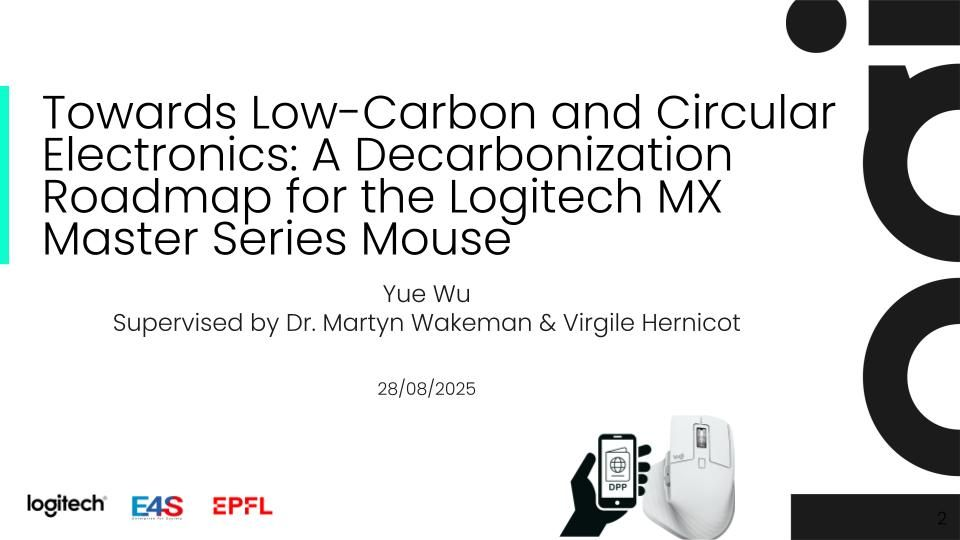
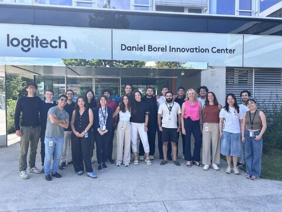

Logitech: Digital Product Passport & Dynamic Carbon Calculation for Sustainable Product Design

This project is part of Logitech's broader decarbonization initiative, aiming to enhance product-level transparency and sustainability. It focuses on developing a Digital Product Passport (DPP) that integrates carbon footprint data, lifecycle information, and user interaction, supporting Logitech’s transition toward low-carbon and circular product design.
This project centers on the design and implementation of a Digital Product Passport (DPP) system for Logitech products, with a strong focus on carbon transparency and lifecycle sustainability.
At its core, I developed a dynamic carbon emission calculator that leverages Logitech’s internal carbon database to estimate product-level emissions across the full lifecycle. Unlike static carbon labels, this model incorporates real-world usage scenarios, including product lifespan, repair frequency, and replacement behavior, enabling more accurate and scenario-based carbon assessments.
Building on this, I designed a time-based decarbonization framework, identifying key emission hotspots and evaluating potential reduction pathways, including alternative materials, energy efficiency improvements, and circular design strategies.
To enhance accessibility and user engagement, I also prototyped a Digital Product Passport interface (using React), which integrates:
The system is designed to support both internal decision-making (e.g., product design and sustainability strategy) and external transparency, aligning with emerging regulations such as the EU’s Ecodesign for Sustainable Products Regulation (ESPR).
